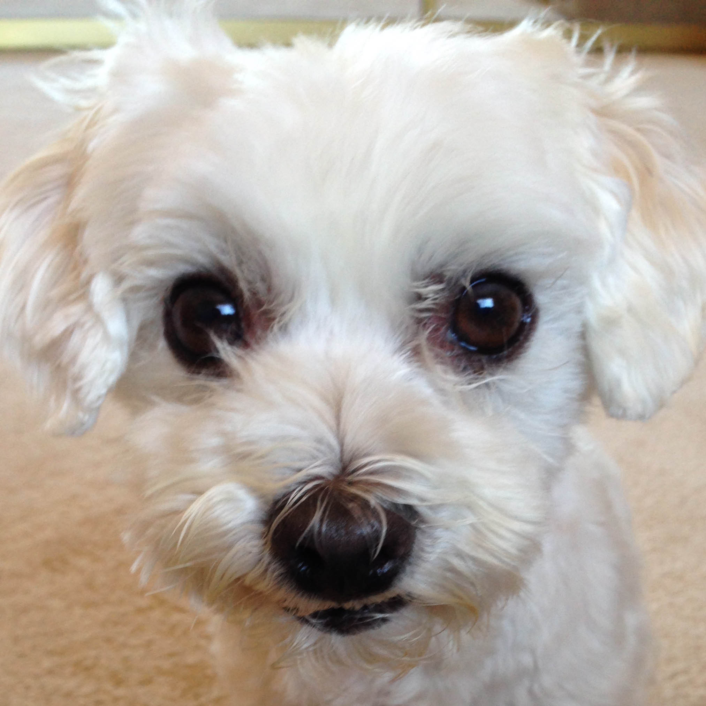

Buddy Binks
Ferocious Lap Dog
mrbinks@lapdog.com
555-555-5555
San Francisco, CA
Mr. Binks is not evil. However, he sometimes lacks empathy and goes into a dissociative state, which causes him to commit atrocities. In his nine years of life, he has a total of 12 violent kills; 6 pairs of socks, 2 term papers, 2 pairs of headphones, a pair of shoes, and one birthday cake. Don't let his big puppy eyes fool you. He is known for hustling unsuspecting humans into loving him, especially the ladies. His aliases include: Buddy Stinks, Mr. Stinks, Punk Face, Squibby, Budoku, Binks, Buds, Winks, and Winker.